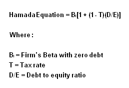

A fundamental analysis method of analyzing a firm's costs of capital as it uses additional financial leverage, and how that relates to the overall riskiness of the firm. The measure is used to summarize the effects this type of leverage has on a firm's cost of capital (over and above the cost of capital as if the firm had no debt). The equation is:
The equation is used to determine the effects of financial leverage on a firm, as measured by the Hamada coefficient. The higher the coefficient, the higher the risk associated with the firm. For example, say a firm has a debt to equity ratio of 0.60, a tax rate of 33%, and a debt free beta of 0.95. The Hamada coefficient would be about 1.33 {0.95[1+(1-0.33)(0.60)]}. This means that financial leverage, for this firm, increases the overall risk by a factor of 0.38, or by 40%.
This equation quantifies the effects financial leverage has on a firm, and can serve as a quick and dirty analysis of a firm's overall business risk as it relates to the returns from the market overall.
{kind=link}